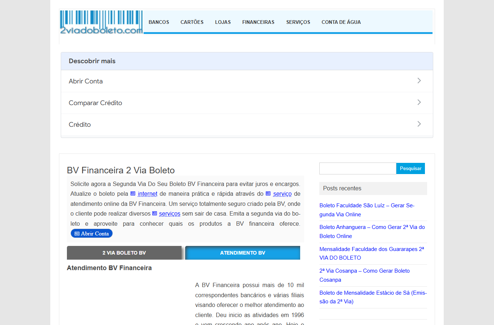
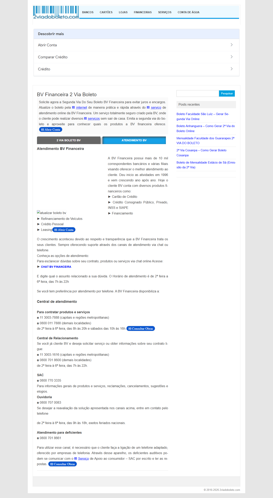

SIMIO · dossiê de candidato · campanha simio-20261118-184932-cc75 · gerado em 2026-11-18T20:44:56+00:00
https://2viadoboleto.com/bv-financeira/
NO_INDICATION Prioridade LOW · Cenário B_AMBIGUOUS_COMMUNICATION · Revisão humana: NOT_REQUIRED
Este dossiê apresenta indícios para apoio à auditoria. Não constitui conclusão regulatória. As conclusões automatizadas devem ser verificadas contra as evidências brutas abaixo (screenshots, catálogo e arquivos com hash). Conteúdo de terceiros é exibido como texto; links não são clicáveis por segurança.
A página analisada ('2viadoboleto.com/bv-financeira/') não aparenta ser de um correspondente bancário nem tenta reproduzir a identidade visual do Banco BV; trata-se de um portal/blog genérico que publica guias sobre emissão de 2ª via de boletos de várias empresas, monetizado via anúncios programáticos. O texto refere-se à BV Financeira em terceira pessoa. Contudo, a presença de botões de ação ('2 VIA BOLETO BV', 'ATENDIMENTO BV', 'CHAT BV FINANCEIRA') misturados a links patrocinados ('Abrir Conta') e a ausência de um aviso claro de isenção de responsabilidade (não oficialidade) configuram comunicação ambígua (Cenário B), recomendando revisão pela possibilidade de confusão do consumidor na jornada de busca por segunda via de boleto. [Revisor: DOWNGRADE] A página pertence a um portal informativo genérico ('2viadoboleto.com') com artigos sobre emissão de segunda via de boletos de múltiplas empresas de diversos setores (educação, saneamento, finanças). O texto é inteiramente descritivo e em terceira pessoa, listando canais públicos de atendimento (0800, SAC, Ouvidoria) e orientações gerais, monetizado por anúncios programáticos padrão (Google AdSense). As abas '2 VIA BOLETO BV' e 'ATENDIMENTO BV' são apenas elementos de navegação interna do próprio artigo. Não há uso indevido de identidade visual do Banco BV, nem captação de dados, nem indício de atuação como correspondente bancário ou tentativa de induzir o usuário a erro quanto à titularidade do domínio. Trata-se de menção meramente informativa/editorial, justificando o rebaixamento para NO_INDICATION e prioridade LOW.


| Ref | Tipo | Local | Conteúdo |
|---|---|---|---|
| E-URL | domain | url | URL final: https://2viadoboleto.com/bv-financeira/ (domínio: 2viadoboleto.com) |
| E-COLLECT | network | collection | Status da coleta: OK; HTTP 200; ocorrências: network did not become idle (continuing) |
| E-SHOT-VIEWPORT | screenshot | viewport | evidence\Cf09ef5e0e0\attempt-1\viewport.png (sha256 9f13ae2f7e1b2ed0…) |
| E-SHOT-FULL | screenshot | page | evidence\Cf09ef5e0e0\attempt-1\fullpage.png (sha256 4f568f039f23f70f…) |
| E-TITLE | title | head | BV Financeira 2 Via Boleto | 2 Via do Boleto |
| E-CANONICAL | meta | head | https://2viadoboleto.com/bv-financeira/ |
| E-HEAD-1 | heading | page | BV Financeira 2 Via Boleto |
| E-HEAD-2 | heading | page | ATUALIZAR BOLETO BV FINANCEIRA |
| E-HEAD-3 | heading | page | Atendimento BV Financeira |
| E-HEAD-4 | heading | page | Central de atendimento |
| E-HDR | text | header | Ir para o conteúdo BANCOS CARTÕES LOJAS FINANCEIRAS SERVIÇOS CONTA DE ÁGUA | BV Financeira 2 Via Boleto |
| E-FOLD | text | viewport (acima da dobra) | Ir para o conteúdo Bancos Cartões Lojas Financeiras Serviços Conta de Água Descobrir mais Abrir Conta Comparar Crédito Crédito BV Financeira 2 Via Boleto Solicite agora a Segunda Via Do Seu Boleto BV Financeira para evitar juros e encargos. Atualize o boleto pela internet de maneira prática e rápida através do serviço de atendimento online da BV Financeira. Um serviço totalmente seguro criado pela BV, onde o cliente pode realizar diversos serviços sem sair de casa. Emita a segunda via do boleto e aproveite para conhecer quais os produtos a BV financeira oferece. Abrir Conta 2 Via Boleto BV Atendimento BV Atendimento BV Financeira A BV Financeira possui mais de 10 mil correspondentes bancários e várias filiais visando oferecer o melhor atendimento ao cliente. Deu inicio as atividades em 1996 e vem crescendo ano após ano. Hoje o cliente BV conta com diversos produtos financeiros como: ► Cartão de Crédito ► Crédito Consignado Público, Privado, INSS e SIAPE ► Financiamento ► Refinanciamento de Veículos ► Crédito Pessoal ► Leasing Pesquisar por: Posts recentes Boleto Faculdade São Luíz – Gerar Segunda Via Online Boleto Anhanguera – Como Gerar 2ª Via do Boleto Online Mensalidade Faculdade dos Guararapes 2ª VIA DO BOLETO 2ª Via Cosanpa – Como Gerar Boleto Cosanpa Boleto de Mensalidade Estácio de Sá (Emissão da 2ª Via) |
| E-NAV | nav | header | 2 Via do Boleto <https://2viadoboleto.com/> | Ir para o conteúdo <https://2viadoboleto.com/bv-financeira/#content> | BANCOS <https://2viadoboleto.com/servicos/bancos/> | CARTÕES <https://2viadoboleto.com/servicos/cartoes/> | LOJAS <https://2viadoboleto.com/servicos/lojas/> | FINANCEIRAS <https://2viadoboleto.com/servicos/financeiras/> | SERVIÇOS <https://2viadoboleto.com/servicos/servicos/> | CONTA DE ÁGUA <https://2viadoboleto.com/servicos/conta-de-agua/> |
| E-CTA-1 | cta | page | Pesquisar |
| E-IMG-1 | image | header (acima da dobra) | imagem alt='2 Via do Boleto' src=https://2viadoboleto.com/wp-content/uploads/2016/09/logo.jpg (230x66, acima da dobra) |
| E-IMG-2 | image | page | imagem alt='atualizar boleto bv' src=https://2viadoboleto.com/2016/12/2-via-BV-Financeira.jpg (146x27, abaixo da dobra) |
| E-TXT-001 | text | page | BANCOS CARTÕES LOJAS FINANCEIRAS SERVIÇOS CONTA DE ÁGUA |
| E-TXT-002 | text | page | BV Financeira 2 Via Boleto |
| E-TXT-003 | text | page | Solicite agora a Segunda Via Do Seu Boleto BV Financeira para evitar juros e encargos. Atualize o boleto pela internet de maneira prática e rápida através do serviço de atendimento online da BV Financeira. Um serviço totalmente seguro criado pela BV, onde o cliente pode realizar diversos serviços sem sair de casa. Emita a segunda via do boleto e aproveite para conhecer quais os produtos a BV |
| E-TXT-004 | text | page | 2 VIA BOLETO BV |
| E-TXT-005 | text | page | ATENDIMENTO BV |
| E-TXT-006 | text | page | ATUALIZAR BOLETO BV FINANCEIRA |
| E-TXT-007 | text | page | A BV Financeira disponibilizou um canal de acesso online, para que os clientes possam solicitar a segunda via do boleto. Mas lembre-se: |
| E-TXT-008 | text | page | É possível atualizar o boleto BV Financeira por meio da internet somente nos casos em que o boleto esteja em dia ou com menos de 15 dias de atraso. Se este for o seu caso, basta digitar o seu número de contrato e em seguida digitar o seu CPF na seção ACESSO CLIENTES . E complete preenchendo os caracteres e depois clicando em OK. |
| E-TXT-009 | text | page | Acesse: ATUALIZAR BOLETO BV FINANCEIRA |
| E-TXT-010 | text | page | Nota: A BV Financeira só envia boleto por email mediante a solicitação feita pelo próprio cliente em um dos canais de atendimento. Ou seja: se você recebeu um boleto por email, mas não foi você quem solicitou, Desconsidere o mesmo. |
| E-TXT-011 | text | page | ► Para emitir a segunda via do boleto vencido a mais de 15 dias, O cliente deverá entrar em contato por telefone com a acessória de cobrança. Para obter o telefone da acessória |
| E-TXT-012 | text | page | Acesse: OBTER TELEFONE DA ACESSÓRIA. |
| E-TXT-013 | text | page | Atendimento BV Financeira |
| E-TXT-014 | text | page | A BV Financeira possui mais de 10 mil correspondentes bancários e várias filiais visando oferecer o melhor atendimento ao cliente. Deu inicio as atividades em 1996 e vem crescendo ano após ano. Hoje o cliente BV conta com diversos produtos financeiros como: |
| E-TXT-015 | text | page | O crescimento aconteceu devido ao respeito e transparência que a BV Financeira trata os seus clientes. Sempre oferecendo suporte através dos canais de atendimento via chat ou telefone. |
| E-TXT-016 | text | page | Conheça as opções de atendimento: |
| E-TXT-017 | text | page | ► CHAT BV FINANCEIRA |
| E-TXT-018 | text | page | E digite qual o assunto relacionado a sua dúvida. O Horário de atendimento é de 2ª feira a 6ª feira, das 7h às 22h |
| E-TXT-019 | text | page | Se você tem preferência por atendimento por telefone. A BV Financeira disponibiliza a: |
| E-TXT-020 | text | page | Central de atendimento |
| E-TXT-021 | text | page | Se você já cliente BV e deseja solicitar serviço ou obter informações sobre seu contrato ligue: |
| E-TXT-022 | text | page | SAC |
| E-TXT-023 | text | page | Ouvidoria |
| E-TXT-024 | text | page | Se desejar a reavaliação da solução apresentada nos canais acima, entre em contato pelo telefone |
| E-TXT-025 | text | page | Atendimento para deficientes |
| E-TXT-026 | text | page | Para utilizar esse canal, é necessário que o cliente faça a ligação de um telefone adaptado, oferecido por empresas de telefonia. Através desse aparelho, os deficientes auditivos podem se comunicar com o Serviço de Apoio ao consumidor – SAC por escrito e ler as repostas. Consultar Obras |
| Dimensão | Sinal | Achado | Refs |
|---|---|---|---|
| VISUAL_IDENTITY | NEUTRAL | O site possui layout próprio de portal de artigos/blog ('2viadoboleto.com'), com logotipo de código de barras e menu genérico ('BANCOS', 'CARTÕES', 'LOJAS', 'FINANCEIRAS'), não imitando a identidade visual do Banco BV. | E-URL E-NAV E-IMG-1 E-SHOT-VIEWPORT |
| DECLARED_COMMERCIAL_IDENTITY | CONFUSION | O site identifica-se apenas pelo domínio '2viadoboleto.com', sem apresentar razão social, CNPJ ou qualquer aviso explícito de que se trata de um portal informativo independente sem vínculo com as marcas citadas. | E-URL E-IMG-1 E-SHOT-FULL |
| CORRESPONDENT_TRANSPARENCY | NOT_ASSESSED | A página não aparenta ser de um correspondente bancário ofertando produtos diretamente, mas sim um portal informativo/blog monetizado com anúncios. O texto apenas menciona em terceira pessoa que 'A BV Financeira possui mais de 10 mil correspondentes bancários'. | E-TXT-014 E-SHOT-FULL |
| INSTITUTIONAL_LANGUAGE | LEGITIMATE | O texto é redigido em terceira pessoa, em tom descritivo e informativo sobre como utilizar os canais da instituição ('A BV Financeira disponibilizou...', 'A BV Financeira possui...'), sem reivindicar ser a própria instituição. | E-TXT-007 E-TXT-014 E-TXT-015 E-TXT-019 |
| LOGO_USAGE | NEUTRAL | Não há uso do logotipo do Banco BV no cabeçalho. Uma imagem secundária referenciada no código ('2-via-BV-Financeira.jpg') aparece quebrada na renderização da página. | E-IMG-1 E-IMG-2 E-SHOT-FULL |
| SERVICE_JOURNEY | CONFUSION | Embora o texto seja informativo, a página exibe botões de abas ('2 VIA BOLETO BV', 'ATENDIMENTO BV'), links de ação ('ATUALIZAR BOLETO BV FINANCEIRA', 'CHAT BV FINANCEIRA') e blocos de anúncios ('Abrir Conta') que podem induzir usuários menos atentos a clicar acreditando iniciar o atendimento de segunda via. | E-TXT-004 E-TXT-005 E-TXT-009 E-TXT-017 E-SHOT-VIEWPORT |
| CONTACT_CHANNELS | NEUTRAL | A página lista números de telefone de atendimento (3003 / 0800), SAC e Ouvidoria atribuídos à instituição em formato de guia informativo, sem apresentar telefones ou WhatsApp de terceiros para captação direta. | E-TXT-020 E-TXT-022 E-TXT-023 E-SHOT-FULL |
| CONSUMER_CONFUSION | CONFUSION | Como é típico de portais agregadores de '2ª via de boleto' monetizados por anúncios, a combinação de títulos diretos ('BV Financeira 2 Via Boleto'), botões de navegação internos e links patrocinados ('Abrir Conta') sem um aviso claro de 'site não oficial' pode gerar confusão inicial na jornada do consumidor. | E-TITLE E-FOLD E-SHOT-VIEWPORT |
A página analisada ('2viadoboleto.com/bv-financeira/') não aparenta ser de um correspondente bancário nem tenta reproduzir a identidade visual do Banco BV; trata-se de um portal/blog genérico que publica guias sobre emissão de 2ª via de boletos de várias empresas, monetizado via anúncios programáticos. O texto refere-se à BV Financeira em terceira pessoa. Contudo, a presença de botões de ação ('2 VIA BOLETO BV', 'ATENDIMENTO BV', 'CHAT BV FINANCEIRA') misturados a links patrocinados ('Abrir Conta') e a ausência de um aviso claro de isenção de responsabilidade (não oficialidade) configuram comunicação ambígua (Cenário B), recomendando revisão pela possibilidade de confusão do consumidor na jornada de busca por segunda via de boleto.
Nenhum CNPJ ou razão social identificáveis no conteúdo coletado.
| Tipo | Valor | Ref | Contexto |
|---|---|---|---|
| domain | 2viadoboleto.com | E-URL |
Mapeamento indicativo para apoio à auditoria. Não constitui conclusão regulatória; a decisão definitiva pertence à auditoria.
Fonte: NORMATIVE
Art. 14. O contrato de correspondente deve estabelecer: [...] II - vedação à utilização, pelo contratado, de logomarca ou de outros atributos que sejam similares aos adotados pela instituição contratante em suas agências, postos de atendimento, sítio eletrônico na internet, aplicativo ou outras plataformas de comunicação em rede;
Evidência observada: —
Fonte: NORMATIVE
Art. 14. O contrato de correspondente deve estabelecer: [...] III - divulgação ao público, pelo contratado, de sua condição de prestador de serviços à instituição contratante, identificada pelo nome com que é conhecida no mercado, com descrição dos produtos e serviços oferecidos e canais de contato da instituição contratante, inclusive de sua ouvidoria, em local visível, em destaque e em formato legível, por meio de: a) sítio eletrônico do correspondente na internet, acessível na página inicial; b) aplicativo e outras plataformas de comunicação em rede do correspondente; [...]
Hipótese: Divulgação ao público da condição de prestador de serviços à contratante ausente, insuficiente ou sem destaque. A norma disciplina correspondentes contratados; o responsável não foi identificado como correspondente.
Evidência observada: E-FOLD E-IMG-1 E-SHOT-FULL E-SHOT-VIEWPORT E-TITLE E-URL
Informação faltante:
Fonte: NORMATIVE
Art. 3º O correspondente atua por conta e sob as diretrizes da instituição contratante, que assume inteira responsabilidade pelo atendimento prestado aos clientes e usuários por meio do contratado.
Hipótese: Atendimento ao público prestado por meio do contratado em condições que podem não seguir as diretrizes da contratante. A norma disciplina correspondentes contratados; o responsável não foi identificado como correspondente.
Evidência observada: E-FOLD E-SHOT-VIEWPORT E-TXT-004 E-TXT-005 E-TXT-009 E-TXT-017
Informação faltante:
Se o responsável não for correspondente contratado, os indícios podem caracterizar uso indevido de marca ou fraude, fora do escopo da Res. 4.935: avaliar encaminhamento às áreas jurídica/segurança.
Limitações: requisitos contratuais/internos não fornecidos: mapeamento limitado ao texto normativo
Decisão: DOWNGRADE → NO_INDICATION / LOW
A página pertence a um portal informativo genérico ('2viadoboleto.com') com artigos sobre emissão de segunda via de boletos de múltiplas empresas de diversos setores (educação, saneamento, finanças). O texto é inteiramente descritivo e em terceira pessoa, listando canais públicos de atendimento (0800, SAC, Ouvidoria) e orientações gerais, monetizado por anúncios programáticos padrão (Google AdSense). As abas '2 VIA BOLETO BV' e 'ATENDIMENTO BV' são apenas elementos de navegação interna do próprio artigo. Não há uso indevido de identidade visual do Banco BV, nem captação de dados, nem indício de atuação como correspondente bancário ou tentativa de induzir o usuário a erro quanto à titularidade do domínio. Trata-se de menção meramente informativa/editorial, justificando o rebaixamento para NO_INDICATION e prioridade LOW.
| Tema | Severidade | Questionamento | Refs |
|---|---|---|---|
| over_interpretation | HIGH | O analista classificou a página como comunicação ambígua (REVIEW_REQUIRED / MEDIUM) devido a abas internas ('2 VIA BOLETO BV', 'ATENDIMENTO BV'), links no texto e anúncios programáticos. Contudo, as evidências mostram claramente um blog/portal informativo genérico ('2viadoboleto.com') que publica tutoriais em terceira pessoa sobre como emitir boletos de diversas empresas (Cosanpa, Anhanguera, Estácio, etc.). Não há tentativa de se passar pelo Banco BV, nem oferta de serviços financeiros em nome da instituição ou atuação como correspondente bancário. | E-URL E-NAV E-FOLD E-SHOT-VIEWPORT E-SHOT-FULL |
| domain_attribution | MEDIUM | A exigência de CNPJ ou declaração de não oficialidade no rodapé aplica-se a parceiros comerciais, correspondentes ou páginas que simulam canais da instituição, não a blogs informativos independentes que apenas redigem artigos descritivos sobre serviços públicos e privados. | E-SHOT-FULL E-TXT-007 E-TXT-014 |
| Fonte | Consulta / hipótese | URL original | Título / trecho |
|---|---|---|---|
| grounding | páginas que se descrevem como 'canal oficial', 'site oficial' ou 'central de atendimento' do Banco BV mas não pertencem ao banco H4-official-language | https://2viadoboleto.com/bv-financeira/ | 2viadoboleto.com **Descrição:** Portais agregadores de serviços financeiros de terceiros que mantêm páginas dedicadas à emissão de boletos da instituição | Utilizam chamadas e links intitulados *"Central de Atendimento BV"*, *"Atendimento BV Financeira"* e *"Chat BV Financeira"* para captar usuários que buscam 2ª via de faturas ou renegociação fora do ambiente institucional |
Original: https://2viadoboleto.com/bv-financeira/
Final: https://2viadoboleto.com/bv-financeira/
| Artefato | Caminho | SHA-256 | Bytes |
|---|---|---|---|
| screenshot_viewport | evidence\Cf09ef5e0e0\attempt-1\viewport.png | 9f13ae2f7e1b2ed0d6c52cd730f6f42e318474ac5e875a8734c8b2d1f40db50a | 102159 |
| screenshot_full | evidence\Cf09ef5e0e0\attempt-1\fullpage.png | 4f568f039f23f70f4b5633d9fb92f656b13aabba62d9d802dd8536077d062649 | 213967 |
| html | evidence\Cf09ef5e0e0\attempt-1\page.html.txt | a9c87b961ee1d536ebbd5c3ef7a6202be91262d63025f3effde436d10a067ef9 | 292545 |
| text | evidence\Cf09ef5e0e0\attempt-1\text.txt | c9e7b96cee91586efeb905d77506f83fbc253286a71249e8948d4f6cce6dfcc6 | 4726 |
| page_data | evidence\Cf09ef5e0e0\attempt-1\page.json | 52fcec04ebc1164ce56035ca93d15435ee77c4043a9b55bc53dca4eb1ae651a6 | 11513 |
| Quando | De | Para | Nota |
|---|---|---|---|
| 2026-11-18T19:13:20+00:00 | DISCOVERED | QUEUED | prioritised (score 5.0) |
| 2026-11-18T19:13:31+00:00 | QUEUED | COLLECTING | |
| 2026-11-18T19:13:49+00:00 | COLLECTING | COLLECTED | |
| 2026-11-18T19:13:49+00:00 | COLLECTED | ANALYZING | |
| 2026-11-18T19:14:32+00:00 | ANALYZING | REVIEWING | |
| 2026-11-18T19:14:50+00:00 | REVIEWING | COMPLETED |